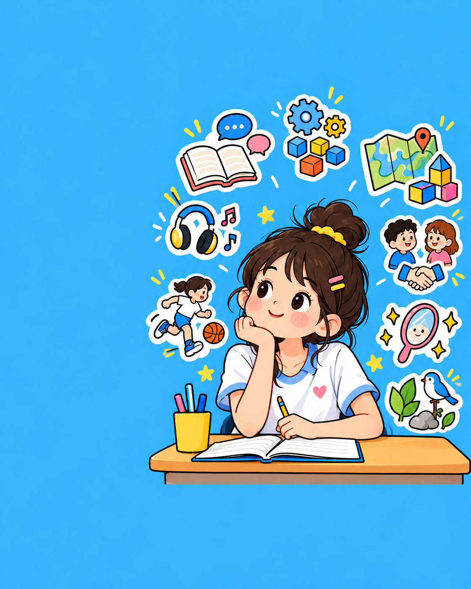

MULTIPLE TALENT MAP
找到你的
天赋领域
用 40 道生活情境题，观察你在学习、创作、解决问题和关系中的自然偏好。
40道情境题
8项天赋维度
9个报告模块

ACCESS REPORT
输入测试码，开始读取你的天赋线索
测试码以商品发货信息为准。结果用于自我观察与发展启发。
本测试参考加德纳提出的多元智能理论。为了方便理解，页面把八个理论维度称为“天赋维度”。结果反映的是本次答卷中的相对倾向，不是标准化智力诊断，也不代表固定能力等级。
按第一反应选择，没有好坏答案
选择后自动进入下一题
REPORT ASSEMBLY00 / 08
正在读取线索八项天赋维度
把你的选择，整理成一张天赋地图
正在汇总你在不同情境中的反应
天赋挖掘测试
YOUR TALENT REPORT
你的最佳天赋：
辅助天赋：
01｜你的最佳天赋评估
02｜8 项天赋综合解读
03｜4 项活跃天赋深入分析
04｜解锁隐藏天赋潜能
05｜规避潜在发展瓶颈
06｜锁定优势职业赛道
赛道用于探索和验证，不是固定职业结论。
07｜掌握天赋拓展策略
08｜定位个人竞争力
09｜获取进阶成长方案
本测试用于职业探索和自我观察，不构成心理诊断、能力等级、职业资格判断或职业决策保证。
长按保存你的报告
好评返现
五星好评，带 3 张截图，15 字以上即可返 1 元。截图发给店铺客服，活动可能随时结束。